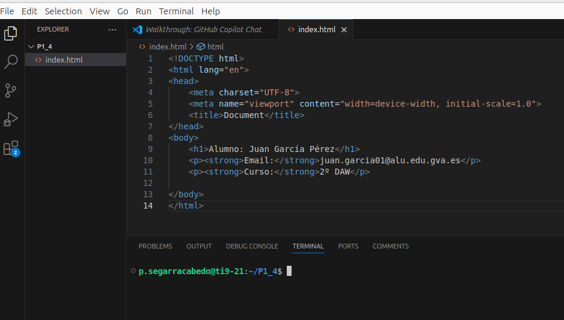

Práctica 1.4 – Ciclo de despliegue: de local a publicado en web
Objetivo
En esta práctica vas a realizar el ciclo completo de despliegue web, desde tu equipo local hasta la publicación en un servidor accesible por Internet. El documento detalla cada paso, con comandos listos para copiar y notas para evitar errores habituales.
1. Preparar el entorno local
En tu ordenador local (Casa o Instituto), abre un terminal y ejecuta:
Esto abrirá Visual Studio Code en la carpeta P1_4.
2. Crear index.html
Crea un archivo llamado index.html con el siguiente contenido de ejemplo (puedes adaptarlo con tus datos reales):
<!DOCTYPE html>
<html lang="es">
<head>
<meta charset="UTF-8">
<meta name="viewport" content="width=device-width, initial-scale=1.0">
<title>Práctica 1.4 - Despliegue Web</title>
</head>
<body>
<h1>Alumno: Juan García Pérez</h1>
<p><strong>Email:</strong> juan.garcia01@alu.edu.gva.es</p>
<p><strong>Curso:</strong> 2º DAW</p>
</body>
</html>
3. Subir el proyecto a GitHub
Desde el terminal integrado de Visual Studio Code, sube tu proyecto al repositorio de GitHub de la práctica (P1_4). Asegúrate de tener Git instalado y la autenticación por SSH configurada previamente.

Pasos
1) Inicializa el repositorio y crea el primer commit:
2) Define la rama principal y vincula el remoto:
# Opción A (recomendada en GitHub actual)
git branch -M main
# Opción B (si tu entorno usa master)
# git branch -M master
3) Añade el remoto y sube la rama principal (sustituye tu_usuario por tu usuario real de GitHub):
git remote add origin git@github.com:tu_usuario/P1_4.git
# Si usas main
git push -u origin main
# Si usas master
# git push -u origin master
4) Etiqueta la entrega para identificar la versión:
Nota: Mantén coherencia entre main o master en todos los comandos (push/pull/merge).
4. Conexión al servidor remoto (AWS)
En el aula solo se permiten conexiones SSH a dominios autorizados (p. ej., GitHub o AWS). Por ello, usarás una instancia en AWS para continuar el despliegue.
1) Ten creada tu instancia (p. ej., Debian) y descarga la clave privada .pem al crearla.
2) Asigna permisos adecuados a la clave:
3) Conéctate a tu instancia desde el ordenador local
Ejemplo:
5. Generar claves SSH para el servidor del profesor (iespublico.com)
Desde tu servidor AWS, genera un par de claves para acceder al servidor del profesor. No compartas nunca la clave privada.
Entrega la clave pública en Aules para que el profesor la añada al servidor:
6. Conexión al servidor iespublico.com y despliegue
1) Conéctate al servidor del dominio iespublico.com usando tu subdominio como usuario:
2) Dentro del servidor, genera un par de claves para conectar con GitHub y añade la clave pública en tu cuenta de GitHub (Settings → SSH and GPG keys → New SSH key):
3) Ve al directorio público de tu sitio y descarga el repositorio:
cd /var/www/subdominio/public_html
# Si ya existe el repo remoto configurado en esta carpeta
git pull origin main # o: git pull origin master
# Si es la primera vez
git clone git@github.com:tu_usuario/P1_4.git .
Conexión SSH con GitHub
Para la conexión correcta se debe poner:
ssh -i ~/.ssh/id_ed25519 git@github.com
Ya que la clave que hemos creado no es predeterminada, debemos usar la opción -i para indicar cuál utilizar.
Puedes hacer una mejora configurando una vez el archivo ~/.ssh/config:
A partir de ahí, ya podrás conectarte directamente con:
ssh git@github.com
4) Comprueba que index.html está en public_html y verifica la publicación accediendo a:
Verás que el navegador quiere ir por defecto a https, debes quitar la s de SSL. Aprenderemos más adelante a generar la web con SSL.
Resultado esperado
Tu index.html debe estar accesible en tu subdominio dentro de iespublico.com, mostrando correctamente la información indicada.
Próximos pasos
Este es un ejercicio base para comprender el flujo de despliegue. En prácticas posteriores se realizará el proceso con Docker, y stacks como LAMP y LEMP, entre otros.